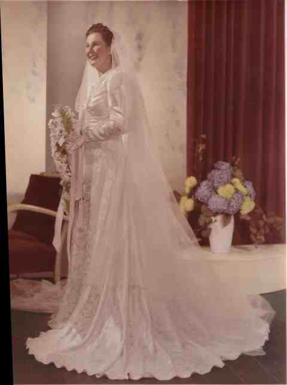

Skinner, Allan Clive
| Birth Name | Skinner, Allan Clive |
| Gender | male |
Events
| Birth | Allan Clive Skinner, 25 March 1925 at 13 Station St, Blackburn, Victoria, Australia |
| Baptism | Allan Clive Skinner, Church of England, Blackburn, Victoria, Australia |
| Occupation | Aprentice fitter and turner, airforce |
| Marriage | Allan Clive and Dawn Yvonne Skinner, 23 April 1949 at Church of England, Box Hill, Victoria, Australia |
| Death | Allan Clive Skinner, 28 September 1995 at Carinya Nurs. Hm., 32 Kangerong Rd, Box Hill, Victoria, Aus. |
Map
Parents
| Mother | Skinner, Florence | |
Families
| Married | Wife | Griffin, Dawn Yvonne | |
| Marriage | Allan Clive and Dawn Yvonne Skinner, 23 April 1949 at Church of England, Box Hill, Victoria, Australia |  | |
| Children | Skinner, Merilyn (Mary) June | ||
| Skinner, Julie Ann | |||
| Skinner, Gregory (Greg) Warren |
Gallery
Dawn Yvonne Griffin, Allan Clive Skinner small
Graham Daniel Griffin, Leile Irene Garlick, Dawn Yvonne Griffin, Allan Clive Skinner small
Allan and Dawn Skinner small